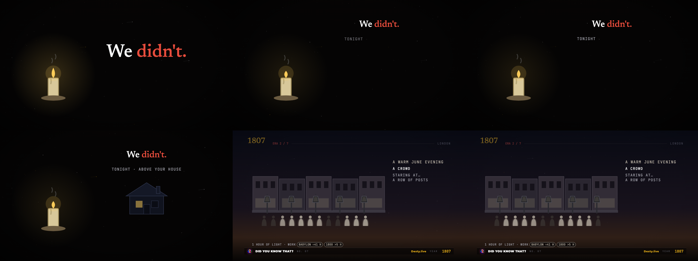
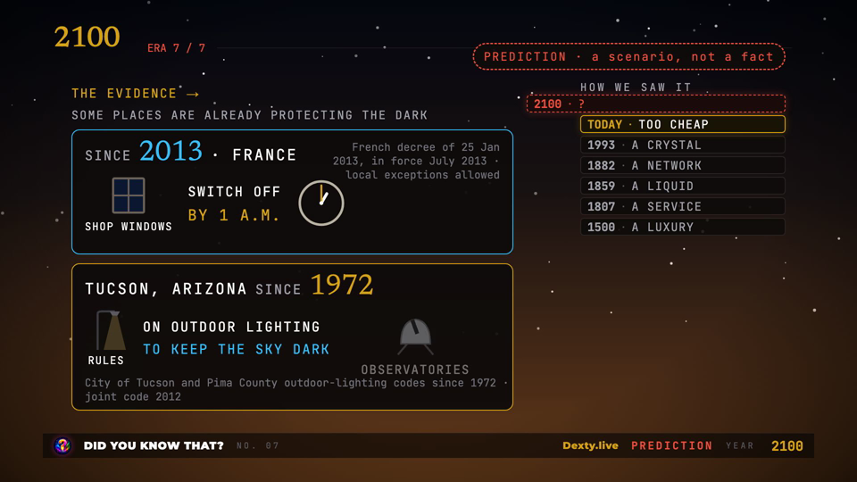
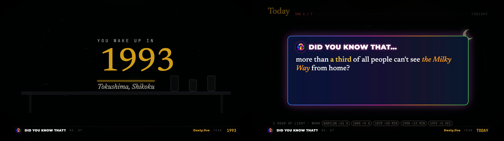
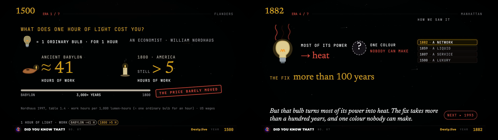

Did You Know That? No. 07 · “Light”: audit
2026-10-29 · master dyk-07-light-1080P.mp4 · 10:22.0 · 1080p30 · branch feat/dyk-07-light (not committed)
Verdict: ready for David's watch. 0 CRITICAL, 0 HIGH and 0 MEDIUM open. Every CRITICAL, HIGH and MEDIUM finding is fixed and was re-checked on the rebuilt master. 4 LOW items remain, all accepted by design. Rubric 27/30 (A). Not uploaded, nothing public.
0 / 0 / 0CRITICAL / HIGH / MEDIUM open
5 / 5HIGH + MEDIUM + timing fixed
4LOW accepted (by design)
PASSqa_final: A/V 0 ms, 0 gaps
−14.1LUFS · true peak −2.4 dBTP
623 / 0BEATMAP rows / gaps ≥ 2 s
How it was audited
| Pass | What | Result |
|---|---|---|
| Voice | Whisper round-trip on every take, voice pre-flight (pace, drag, run-ons, SFX on words), David's listen of full passages | PASS · 5 pre-flight items waived by David by ear |
| Build gates | tsc, check_cues.py (every cue resolves to a word), make_beatmap.py | 0 errors · all cues resolve · 0 gaps |
| Stills | 121 stills at the cue frames of all 15 shots, viewed on 8 contact sheets before the render | 2 HIGH found → fixed |
| Frames | 2 independent read-only auditors, the full master sampled every 2 s (26 sheets), against the per-second transcript, RESEARCH L1–L18 and the shot brief | 0 C · 1 H · 1 M · 15 L → H and M fixed |
| Mix | Cuesheet check: DYK click before “Did”, chime after “that” (7 cards), click density, end-screen stack | all 7 correct · ≤ 3 clicks/s · 4 spaced cues |
| Master | qa_final.py, qa_sweep.py after the last re-render | PASS · loudness flags none |
Findings
| # | Sev | Where | Finding | Fix | Status |
|---|---|---|---|---|---|
| 1 | HIGH | 2100 · 8:33 | France card: the decree source line printed over “SHOP WINDOWS”. | Source moved to the empty top-right of the card. | fixed · checked in mp4 |
| 2 | HIGH | 2100 · 8:36 | Tucson card: “TO KEEP THE SKY DARK” wrapped and its source line overlapped “DARK”. | Text column 400 → 470 px, card 300 → 330 px. | fixed · checked in mp4 |
| 3 | HIGH | 1882 · 5:34 | “NOBODY CAN MAKE” touched the HOW WE SAW IT ladder (auditor 1). | Colour group re-laid (swatch 120 px, labels 28 px); ~70 px clear of the ladder, ~40 px clear of “MOST OF ITS POWER”. | fixed · checked in master at 334 s |
| 4 | MEDIUM | 1500 · 2:18 | “THE PRICE BARELY MOVED” stamp ended ~60 px from the right edge (margin 160). | Bar 1100 → 1000 px, stamp moved left and 30 → 26 px. | fixed · checked in master at 138 s |
| 5 | MEDIUM | Hook · 0:16 | TONIGHT label arrived 0.37 s after “tonight,” (held behind the 1.5 s “We didn't.” rule). | “We didn't.” holds 1 s alone then docks (stays legible); house layer fades in on the word; whoosh moved. | fixed · still 497 |
| 6 | MEDIUM | 1807 · 2:39 | “A ROW OF POSTS” legible 1.43 s before the DYK card covered it (rule ≥ 1.5 s). | +0.4 s pause after “posts.” (no re-voice) → 1.83 s. | fixed · still 306 |
| 7 | LOW | 1500 · 1:52 | Source line said “beeswax cost several times more” ~4 s before “Beeswax”. | That clause now appears on “Beeswax”. | fixed |
| 8 | LOW | all eras | NEXT ▸ year chip shows with the cliffhanger band, before the year is spoken. | Series convention (Nos. 01–06). | accepted |
| 9 | LOW | 1882 · 5:26 | Cliffhanger part “…into heat.” shows ~3 s before “heat”. | Skill rule: band parts land on their first word. | accepted |
| 10 | LOW | 1859 · 4:16; 1500 · 1:28 | Near-static beats (lamp; curfew card) up to 4 s. | Flame/star motion continues; no gap ≥ 2 s in BEATMAP. | accepted |
| 11 | LOW | Today · 6:40 | Scene fragments visible at the DYK card's edges. | Window panel fades out under the card's fade-in. | fixed · checked in master at 404 s |
| 12 | LOW | 1993 · 5:38 | “Tokushima, Shikoku” touches a shelf prop. | Lab props moved 120 px right. | fixed · checked in master at 338.7 s |
| 13 | LOW | 7:26 | One dark frame at the Today → Answer cut. | Deliberate beat before THE ANSWER. | accepted |
| 14 | LOW | 1859 · 4:25 | “A LIQUID” chip possibly 1–2 s after the word (auditor said 1882). | Frame-checked: absent on “A” 264.90 s, fades in on “liquid.” 265.14 s, legible 265.30 s. On time. | no fix needed |
Auditor items checked and not counted: 1500/1807/1993 headers looking cut off (an artefact of the contact-sheet label box; full frames are intact); ~1 s leads at 0:46/0:50 (within 2 s sampling; chips are keyed to their words); the Shikoku outline under the table (intended, “island” beat); “07” arriving just after “seven” (correct order).
Evidence




Verification of the final master
| Check | Result |
|---|---|
| Duration | video 622.000 s · audio 622.000 s · diff 0 ms |
| Frames | 18,660 packets, 0 pts gaps > 50 ms, 1920×1080 h264 30 fps |
| Loudness | −14.1 LUFS, true peak −2.4 dBTP (limit −1), sweep flags none |
| SFX | 664 cues in 19 groups; pre-flight: none on a word onset |
| Facts | every on-screen number traced to RESEARCH L1–L18 by both auditors |
Not verified / next
- David's full watch and listen of the master (the real gate).
- Frame-exact timing between 2 s samples (only the flagged moments were frame-checked).
- Packaging (thumbnail, YOUTUBE.md,
packaging_check.py) not started. - Deployment checks: not applicable yet. Nothing is uploaded, and Dexty.live and YouTube are untouched. Upload waits for David and the numbered order (07 first).
- Nothing committed; the branch is
feat/dyk-07-lighton top of the unmerged No. 06 branch.